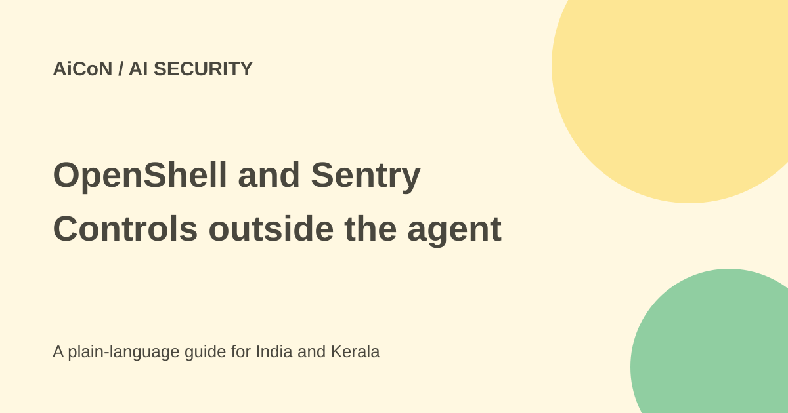

NVIDIA OpenShell and Sentry: agent boundaries, costs and limits
OpenShell is the software runtime in NVIDIA's agent-safety platform. Sentry is a separate hardware reference design. Neither name is a guarantee that an AI agent cannot make a harmful mistake.

What did NVIDIA announce?
NVIDIA's 28 September 2026 release describes an Open Agent Safety Platform combining OpenShell software with the Sentry reference system design. The goal is to control agents from outside the model's own reasoning process.
OpenShell is the downloadable runtime layer. Sentry adds an out-of-band watchdog built on BlueField-4 data-processing units, or DPUs. These are different components, with different deployment needs.
What OpenShell controls
The current developer page describes sandboxed execution, controlled resource access, credential protection and policy verification. A sandbox is a restricted environment where an agent can work without receiving every permission of the host.
The repository describes a gateway that manages sandbox life cycles through configured compute drivers, including Docker, Podman, MicroVM and Kubernetes. Runtime policy can restrict what resources and destinations an agent may use. Correct policies and supported deployment still matter.
Alpha software is not a safety certificate
The current repository carries an alpha-status badge and Apache License 2.0. Alpha means a team should expect changing features and interfaces. The launch's description of broad availability does not mean every deployment is mature or independently certified.
Policies can be incomplete, integrations can expose too much access and a permitted action can still be wrong. Runtime isolation helps with boundaries; it does not decide whether a message is socially appropriate, a price is current or a document's contents are correct.
Which hosts does the software support?
The README lists macOS, Windows with WSL 2 and Linux, plus a local runtime such as Docker or Podman or host virtualisation for MicroVM sandboxes. NVIDIA's launch emphasises Vera CPUs and says the open software can be extended to Arm and Intel platforms.
Do not turn that extension statement into a promise that every feature works unchanged on every machine. Check the exact host, compute driver and sandbox configuration. GPU-backed workloads have additional driver and container-toolkit requirements in the README.
What Sentry adds
The launch describes Sentry as a BlueField-4 watchdog operating independently of the agent's host. NVIDIA says it can monitor behaviour and quarantine agents that leave their boundaries in milliseconds. That timing and protection claim is NVIDIA's statement, not a result independently tested for this guide.
Sentry is a reference system design using NVIDIA DOCA software and specific DPU hardware. It is not the same thing as installing the OpenShell package on a laptop. Confirm actual hardware, partner implementation and support before budgeting for it.
Free software versus operating cost
OpenShell's Apache-2.0 code is publicly available. That does not make the agent's model API, cloud sandbox, host hardware or maintenance free. Sentry hardware is an additional infrastructure decision, not a free software add-on.
The checked sources do not establish a universal all-in deployment price or a guaranteed free production service. For an Indian team, estimate model calls, compute, logs and operations alongside any hardware or support quote.
How to run a careful pilot
- Read the current repository and developer guide.
- Choose a supported host and compute driver.
- Start with non-sensitive data and no production credentials.
- Write narrow policies for files, network and required tools.
- Test actions that should be blocked as well as those allowed.
- Check logs and the actual stored outcomes.
- Keep consequential sends, payments and deletions behind review.
- Review upgrades and rollback before wider use.
What the platform cannot settle alone
An agent can stay inside its sandbox and still choose the wrong account, misunderstand a task or trust a misleading document. Model behaviour, identity checks, permissions, human review and final-result checks remain separate parts of the workflow.
The launch lists many participating organisations and integrations. Participation is not proof that every product ships the same controls or has the same security coverage. Check your own product version and configuration rather than relying on a partner logo.
What changed since the original AiCoN post?
This guide adds current repository status, supported host requirements and the cost distinction. It keeps OpenShell software separate from Sentry hardware and labels the quarantine claim as vendor-reported.
Frequently asked questions
Is Sentry just an OpenShell setting?
No. It is a separate hardware reference design.
Does OpenShell guarantee safe answers?
No. It helps enforce runtime boundaries.
Does Apache-2.0 make model calls free?
No. Connected services can still charge.
Sources: Official platform announcement · Developer overview · Current repository and licence · Developer guide · Independent reporting. Checked 7 October 2026.